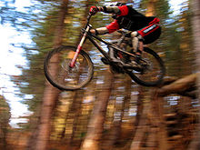
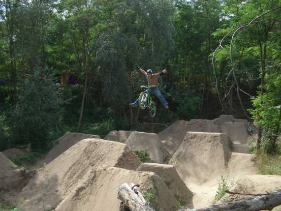
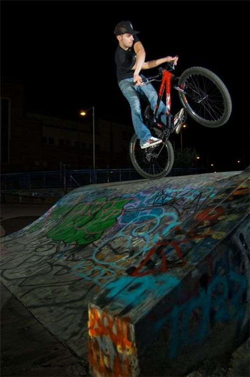

Всё о маунтинбайке
Данный сайт посвящён одному из видов экстремальных видов спорта - маунтинбайку.
Существует несколько дисциплин экстремальной езды.
Фрирайд.

Фрирайд (от англ.free ride — свободная езда)— стиль катания на велосипеде(а также дисциплина велоспорта), подразумевающая под собой езду на велосипеде по сложным, иногда искусственно сооружённым трассам, использующим естественные природные и искусственные препятствия. Успешное передвижение по таким трассам требует специальной технической подготовки и особым образом приспособленных велосипедов (как правило, используются горные велосипеды с прочной рамой, передней и задней подвесками большого хода, мощными дисковыми тормозами). Трассы фрирайда включают преодоление обрывистых склонов высотой до десятков метров, прыжки на высокой скорости, движение по узким извилистым тропинкам, проложенным по крутым склонам или по мосткам (для этих трасс есть специальное название норд - шор).
Соревнования по фрирайду финансируются компаниями, производящими велосипедное и иное спортивное снаряжение. Гонки в стиле фрирайд, с подробным показом всех рискованных трюков, являются основным сюжетом многочисленных фильмов, предназначенных для любителей горного велосипеда.
Дёрт.

Дёрт (англ. dirt — земля, грязь) — специализированная трасса для катания на BMX велосипедах, или специализированных горных велосипедах в стиле дёртджампинг (dirtjumping — прыжки на грязи); стиль катания, главной особенностью которого являются трюки, проделываемые в воздухе во время полета. Для взлёта используются земляные насыпи-трамплины типа _/|_|\_, построенные специально для дёртовых велосипедов . Чаще всего дёрт представляет собой серию трамплинов, идущие один за другим и расположенные таким образом, что велосипедист, после приземления с одного трамплина, попадает к месту вылета со следующего, и т. д. Разогнавшись только в самом начале, байкеры используют набранную скорость для взлётов в течение всей серии трамплинов.
Стрит.

Как вы, наверное, догадались, свое название он взял из-за того, что основной средой катания для байкеров является весь город. Байки могут быть самыми разнообразными, ведь стрит культура ничем не ограничена, кроме вашей фантазии. Это может быть техничный вид, где многие трюки связаны с вращениями и скольжениями. Это может быть более жесткий стрит, где надо прыгать большие лестницы. Это может быть и катание в скейт-парках. Велосипед делается очень прочным, почти похожим на BMX. Стальная рама, стальные шатуны, рули и т.д., только на 26 (иногда 24) дюймовых колесах. У байка могут отсутствовать передняя вилка (может стоять мягкая и прочная на 110-130 мм), переключатели и тормоза. Все это делается для того, чтобы легче было делать трюки, связанные с вращениями.
Кросс - кантри.

Кросс-кантри — одна из спортивных дисциплин в маунтинбайке (горном велосипеде), гонки по пересеченной местности со спусками, затяжными подъемами, скоростными и техническими участками.
Соревнования по кросс-кантри проходят на трассах шорт-трек (длина трассы 2—5 км, обычно 6—10 кругов), классического кросс-кантри (продолжительность гонки от 2 часов до 2 часов 15 минут, обычно длина трассы 5—9 км, 3—7 кругов), марафона и т. д.
В 1996 году кросс-кантри (в классическом варианте, называемом олимпийский кросс (XCO)) стало Олимпийским видом спорта (единственная из дисциплин маунтинбайка). Кросс-кантри в силу своей доступности и относительно низкой травматичности — самая популярная дисциплина в велоспорте.
Для кросс-кантри обычно используется горный велосипед с прочной и легкой рамой (с одной или двумя подвесками), с контактными педалями, позволяющими фиксировать ногу гонщика, с дисковыми или ободными тормозами. На соревнованиях обязательно использование шлема, защищающего голову участника.